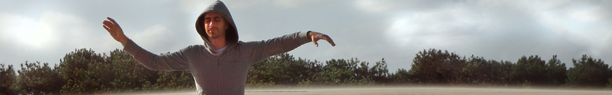

Como llegue al día de hoy
Mis primeras preguntas
Mi vida día un giro importante cuando falleció mi mamá, comenzaron las preguntas que no tenían respuestas. Sentía que un hecho tan significativo en mi vida tenía que tener un propósito y allí comenzó mi búsqueda.
Primero llegó a mi vida Ilda Buverch, mi maestra y madre espiritual. Ella me ayudo durante todo mi proceso de duelo, acompañándome con meditaciones, sesiones de Armonización, dándome material para leer y mucho Amor.
Al principio en las meditaciones me quedaba dormido, y esto me enojaba mucho. Yo quería vivir conscientemente lo que sucedía, los viajes internos y externos, las experiencias, pero no… todavía no estaba listo para vivirlo de esa manera. Ilda me explicaba que la energía trabajaba igual, aunque yo me durmiera, así que tuve que tener paciencia.
Al pasar el tiempo y al ayudarme tanto todo lo que Ilda me brindaba, me empezaron a dar ganas de compartir el camino de otros, acompañando como lo hizo ella conmigo. Lo primero fue el Reiki Ushui con Eva Carnevale.
Cuando comencé a trabajar con Reiki mis manos me pedían dirigirme a otros lugares del cuerpo o sentía en mi cuerpo donde tenía que ir, donde llevar mis manos, si ponerlas con las palmas hacia el cuerpo o acercar el dorso de las manos. Los tres minutos que debía estar en un lugar o en otro, a veces tenían que ser más cortos o más largos, estar más cerca o más lejos del cuerpo físico. Todo esto me conflictuaba porque, siempre buen alumno, debía quedarme en los lugares donde me enseñaron. Por esto deje de compartir Reiki durante mucho tiempo. Algo similar me paso con los mudras. En general estos son figuras fijas, como geometrías, pero a mi me pasaba que las manos me pedían movimiento, no quedarme en una figura, sino ir pasando de un lugar a otro, como si fuera una danza.
Búsqueda del movimiento
Conflictos mediante y gracias al libro “La Reconexión” de Eric Pearl, comencé a escucharme y a dejar que el movimiento fluya. Empecé un día sentado meditando en la playa a moverme, como hacía en mis prácticas de danza, pero imaginando que movía todo el campo energético a mi alrededor. De pronto sentí que era real, texturas y colores invisibles se hicieron visibles y tangibles, las temperaturas cambiaban, mi piel se erizaba, todo variaba dependiendo de la velocidad y el lugar donde me dirigía.
Gracias a mi amiga y maestra Soledad Galoto, y a sus clases de Movimiento Armónico, sus talleres y cursos, y al maravilloso y fino trabajo que hicimos durante la creación de su obra “Ulterior” (obra que llevo en mi corazón); esto se fue desarrollando más y mi percepción fue creciendo.
En mis sesiones dejé que mi cuerpo me hablara y me contara hacia donde ir, cuanto tiempo estar en cada lugar, si tenia que apoyar las manos sobre el cuerpo o a que distancia tenía que trabajar.
Con los mudras también tuve mi proceso, quería saber para que eran los mudras que canalizaba, cuál era su significado. Intentaba entender y encasillarlos. Porque no se quedaban quietos, no alcanzaba a entender el significado de uno que ya cambiaba a otro. Algunos mudras si se aquietaban, alguno muuuy especifico como el mudra de algún chakra. Pero en general el movimiento no paraba.
Como hice anteriormente, los deje fluir y moverse sin intentar entenderlos y un día entendí lo que me pasaba y su significado para mí. Lo que siento, es que los mudras son como llaves que abren puertas. Cuando esa puerta está abierta, el mudra muta a otro o se desarma para mover mis manos y para mover lo que se encuentra detrás. La energía muta y no siempre es igual, por lo tanto, nada es fijo. Con cada persona es diferente y en cada sesión es diferente porque no estamos todo el tiempo de la misma manera.
Aparición de los Cuencos
Luego llegaron los Cuencos… por arte de magia, o no…. A mi me gusta mucho estudiar, nutrirme de cosas que no sé, y en el verano del 2015 tenia ganas de aprender una técnica nueva. Entro a una red social y me aparece una publicidad de un taller de Terapia de Sonidos con Cuencos. Le escribí a Monique Crespo para que me contara de que se trataba y me pareció super interesante. Le escribo a mi amiga Soledad para contarle del curso y que estaba decidiendo si hacerlo y empiezo a escuchar Sonidos de Cuencos en mi casa… locura? Para mi fue una señal, una confirmación. Me anote en el curso y fue como un reencuentro con estos maravillosos instrumentos.
Todo esto eran cosas separadas, hermosas. Daba sesiones de Reiki, de Terapia de Sonidos y los mudras eran para mi… y un día quise integrar todo esto y así es como nació la “Sesión de Armonización Energética” en donde estas tres técnicas encontraron su lugar. En donde me dejo Fluir y me escucho. Donde ya no hay estructuras fijas, donde dejo que mis manos y mi cuerpo se muevan, donde siento donde ir y el tiempo que tengo que permanecer en cada lugar. En qué momento trabajo con los cuencos o con otros instrumento u herramientas.
La Medicina China
Paralelamente comencé mis estudios de Medicina China en la escuela de Mario Schwartz donde me recibí en el año 2016, fue acá donde el Masaje Tuina hizo su aparición junto con otras técnicas. Luego realice un curso de Masaje Deportivo al cual sume el Tuina para realizar mi propio sistema de Masaje Energético donde realizo, desde un lugar relajado y amable, un masaje profundo.
En la búsqueda de perfeccionamiento y práctica, llego a mi vida otro ser generoso, Cristina Rodríguez y su escuela Qiwei. Ella me ofreció su espacio para las prácticas de Medicina China, donde luego continué realizando diferentes cursos complementarios como el Biomagnetismo Medicinal y la Craneopuntura Japonesa entre otros. En este momento, estoy participando en la coordinación conjunta de un espacio de atención comunitaria en su escuela. Hoy en día, continúo haciendo prácticas y cursos de perfeccionamiento en Qiwei.
Donde estoy ahora
Agradezco a estas personas que se cruzaron en mi vida, que me siguen guiando y ayudando a ser quien soy el día de hoy.
Mi camino me ayudo a darme cuenta que las cosas no son ni fijas, ni rígidas, ni estáticas, sino que, como la energía, están en constante movimiento y cambio; y esto es lo que trato de reflejar en mis sesiones.
Al dejar fluir las cosas, es cuando empezaron a funcionar